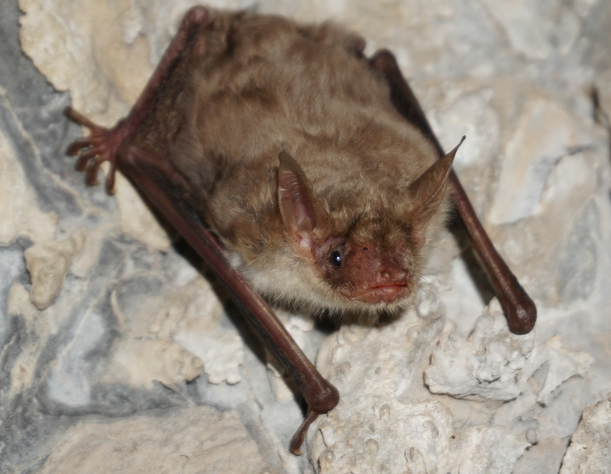

Myotis blythii
Остроухая ночница
IUCN: LC — вызывает наименьшие опасения
Представитель рода ночниц с широким распространением в Евразии, включая Центральную Азию.
- Латинское название
- Myotis blythii
- Семейство
- Гладконосые (Vespertilionidae)
- Статус МСОП (глобальный)
- LC вызывает наименьшие опасения
- Размер
- Предплечье: 50.5-62.1 мм, масса тела: 19-29.5 г
- Убежища
- Пещеры, штольни
- Местообитания
- Луга, степи, агроландшафты
- Распространение в Центральной Азии
- Узбекистан, Казахстан, Кыргызстан, Таджикистан, Туркменистан
- Национальная Красная книга
- Нет
- Риск гибели на ветряках
- Низкий
Источники: Mammal Diversity Database. Сверено 16.11.2026. Поля «Уточняется» оставлены для дальнейшего заполнения.